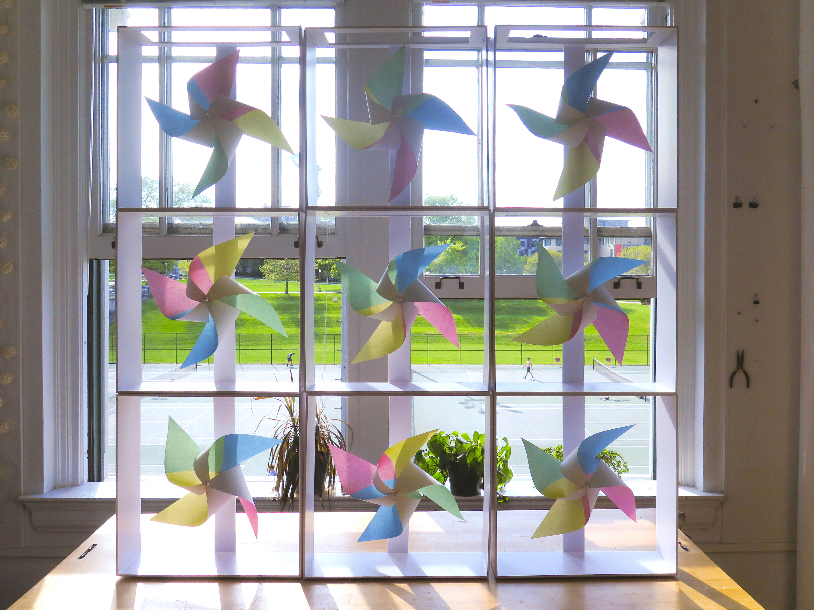
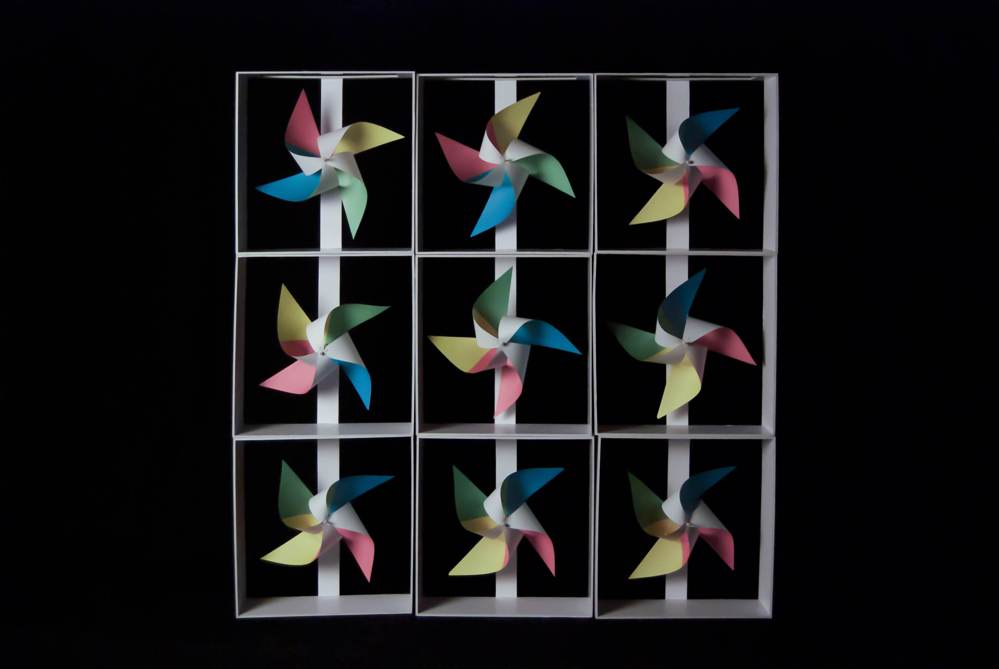
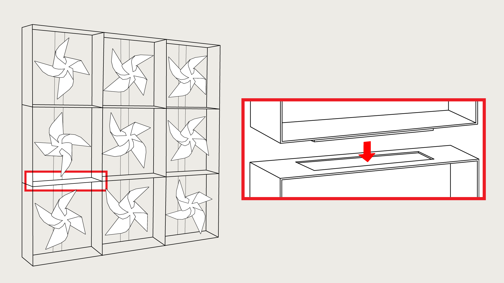

Pinwheels
May 2016
Physical Prototype
Overview
This project was an exercise in understanding private, public, and person spaces, as well as the interactions that take place in such environments. I researched spots around Carnegie Mellon's campus to explore how people behave differently within separate environments, taking note of aspects such as material, texture, climate, and sound. When I attempted to do this one windy and chilly afternoon, I found that there were considerably less people than previous days. As a result, my findings led me to explore ways for outdoor spaces to be utilized despite having less-than-ideal weather conditions. What if a space could be made public or private depending on the weather?
Installation Concept
My solution was based around the persistence of vision illusion to create a more private or more public space depending on how windy it is outside. When winds are strong, the fans spin quickly, allowing people to see through the installation. When winds are weak, the fans stay stationary, obscuring the view of things behind the installation.



Stacking
To make the installation more adjustable depending on where it's placed, I created modules of fans that could be stacked on top of each other. The stacking mechanism simply involves a hole on the top of each module, in which the bottom of another module could easily fit into.
Post-Project Thoughts
A video of this prototype can be found here. Since my prototype was made out of thin materials such as paper and foamcore, if I were to make a full-fledged version, I would used stronger and heavier materials so it could be placed outside without falling. Additionally, using a thicker material for the frame would help reduce the amount of skewing that happens when the modules are stacked. I'd also make each module larger so that the fans would have a larger impact in obscuring and revealing the environment behind them. I think there's a lot of room for improvement in separating two spaces and making them private, so I could also explore different shapes and formations of pinwheels.